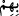
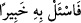
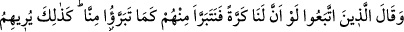
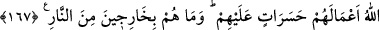

olmaları, aynı soydan gelmeleri ve aynı sevgiyi paylaşmaları gibi çeşitli sebeblerle
aralarında oluşan beraberliğin parçalanmasına sebeb olmuştur. İşte eğer bunlar dünyâda
iken, âhırette böyle bir azâbın olduğuna inansalardı, gerçeği görür ve bâtıldan
uzaklaşırlardı.
(
) kelimesindeki ( ) bâ harf-i cerr’i (
) “Bunu bir bilene sor” (el-
Furkan, 25/59) âyetindeki ( )’de olduğu gibi (
) mânâsındadır. Veya bu ( ) harfi,
sebeb bildirmek için getirilip küfürleri sebebiyle kurtuluşa ermeyi umduklarından,
sebeblerin ortadan kalkacağını ifâde etmektedir. Üçüncü bir ihtimâle göre ise bu “cerr”
harfi fiili geçişli kılmak için kullanılmıştır.
167. (Kötülere) uyanlar şöyle derler: Ah, keşke bir daha dünyaya geri gitmemiz
mümkün olsaydı da, şimdi onların bizden uzaklaştıkları gibi biz de onlardan
uzaklaşsaydık! Böylece Allah onlara, işlerini, pişmanlık ve üzüntü kaynağı olarak
gösterir ve onlar artık ateşten çıkamazlar.
Tâbî olanlar, reislerinin kendilerinden uzaklaştıklarını görünce, dünyâda onlara
uyduklarına pişman olup, keşke tekrar dünyaya dönebilsek ve bunların şu anda bizden
kaçtıkları gibi biz de orada onlardan kaçsaydık ve onlara uymasaydık, derler.
Allah Teâlâ onlara, azâbın inişini ve birbirlerinden uzaklaşmalarını gösterdiği gibi,
şiddetli pişmanlıklar doğuracak amellerini de gösterir.
Hasret, şiddetli pişmanlık ve üzüntü anlamında olup kalbin herhangi bir şeyden dolayı
üzüntü ve elem duyması demektir. Gerçekten pişman olan, gücü kalmayan böylece
kendisinden istifâde edilemeyen, bitkin, yorgun ve çaresiz kimsedir.
“Hasr”ın asıl mânâsı “keşf” yâni açmaktır. Sevdiği bir şeyi kaybeden ve kalbi ondan
ayrı kalan kimse, pişmanlık ve üzüntü duyar.
Pişman olacak olanlar kâfirlerdir. Çünkü bunlar küfürleri sebebiyle iyi amellerinin
boşa çıkmasına ve yaptıkları kötülüklere pişman olurlar. “Keşke iyiliklerimiz yok
olmasaydı, keşke günah işlemeseydik.” diye yakınıp dururlar.
Süddî şöyle demiştir: Kıyâmet günü kâfirlere cennet gösterilir. Onlar Allah’a itâat
etmiş olanlara verilecek köşklere bakarlarken: “Eğer siz Allah’a itaat etmiş olsaydınız
bu köşkler sizin olacaktı” denilir. Bunlar mü’minler arasında taksim edilince kâfirler
son derece pişmanlık duyarlar.
“Ve onlar cehennemden asla çıkamayacaklardır.” Çünkü zaten onlar bunun için
yaratılmışlardır.
Rivâyet olunduğuna göre kâfirler cehenneme girince teker teker bütün organlarına